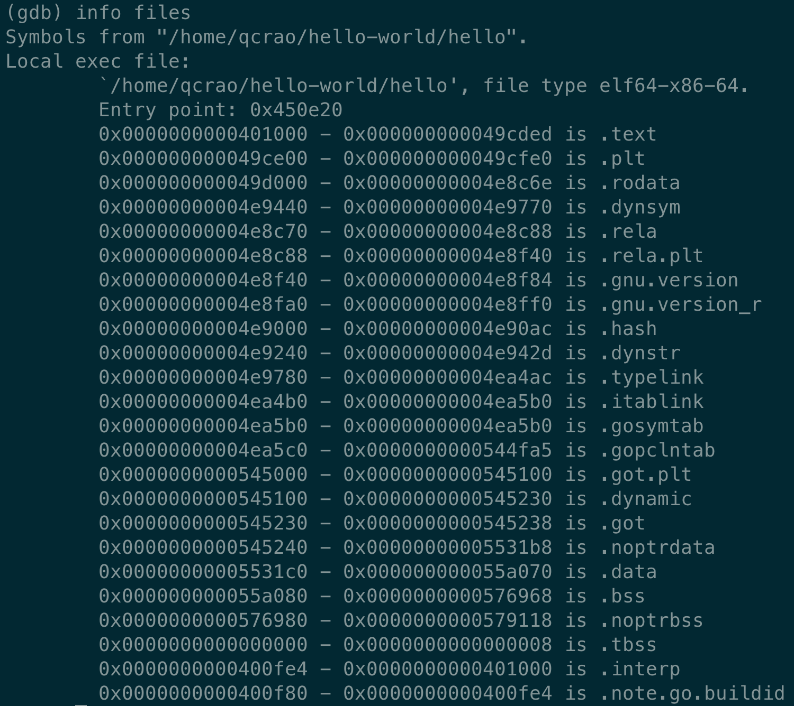
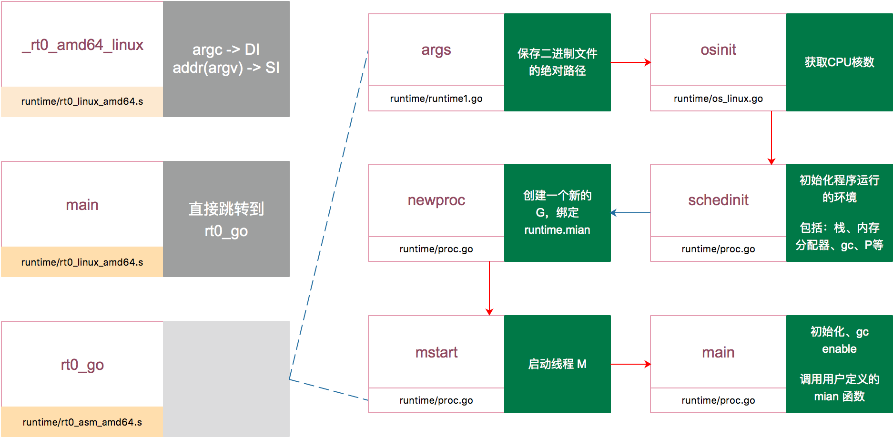

我们从一个 Hello World 的例子开始：
|
|
在项目根目录下执行：
|
|
-gcflags "-N -l" 是为了关闭编译器优化和函数内联，防止后面在设置断点的时候找不到相对应的代码位置。
得到了可执行文件 hello，执行：
|
|
进入 gdb 调试模式，执行 info files，得到可执行文件的文件头，列出了各种段：

同时，我们也得到了入口地址：0x450e20。
|
|
这就是 Go 程序的入口地址，我是在 linux 上运行的，所以入口文件为 src/runtime/rt0_linux_amd64.s，runtime 目录下有各种不同名称的程序入口文件，支持各种操作系统和架构，代码为：
|
|
主要是把 argc，argv 从内存拉到了寄存器。这里 LEAQ 是计算内存地址，然后把内存地址本身放进寄存器里，也就是把 argv 的地址放到了 SI 寄存器中。最后跳转到：
|
|
继续跳转到 runtime·rt0_go(SB)，位置：/usr/local/go/src/runtime/asm_amd64.s，代码：
TEXT runtime·rt0_go(SB),NOSPLIT,$0
// 省略很多 CPU 相关的特性标志位检查的代码
// 主要是看不懂，^_^
// ………………………………
// 下面是最后调用的一些函数，比较重要
// 初始化执行文件的绝对路径
CALL runtime·args(SB)
// 初始化 CPU 个数和内存页大小
CALL runtime·osinit(SB)
// 初始化命令行参数、环境变量、gc、栈空间、内存管理、所有 P 实例、HASH算法等
CALL runtime·schedinit(SB)
// 要在 main goroutine 上运行的函数
MOVQ $runtime·mainPC(SB), AX // entry
PUSHQ AX
PUSHQ $0 // arg size
// 新建一个 goroutine，该 goroutine 绑定 runtime.main，放在 P 的本地队列，等待调度
CALL runtime·newproc(SB)
POPQ AX
POPQ AX
// 启动M，开始调度goroutine
CALL runtime·mstart(SB)
MOVL $0xf1, 0xf1 // crash
RET
DATA runtime·mainPC+0(SB)/8,$runtime·main(SB)
GLOBL runtime·mainPC(SB),RODATA,$8
参考文献里的一篇文章【探索 golang 程序启动过程】研究得比较深入，总结下：
- 检查运行平台的CPU，设置好程序运行需要相关标志。
- TLS的初始化。
- runtime.args、runtime.osinit、runtime.schedinit 三个方法做好程序运行需要的各种变量与调度器。
- runtime.newproc创建新的goroutine用于绑定用户写的main方法。
- runtime.mstart开始goroutine的调度。
最后用一张图来总结 go bootstrap 过程吧：

main 函数里执行的一些重要的操作包括：新建一个线程执行 sysmon 函数，定期垃圾回收和调度抢占；启动 gc；执行所有的 init 函数等等。
上面是启动过程，看一下退出过程：
当 main 函数执行结束之后，会执行 exit(0) 来退出进程。若执行 exit(0) 后，进程没有退出，main 函数最后的代码会一直访问非法地址：
|
|
正常情况下，一旦出现非法地址访问，系统会把进程杀死，用这样的方法确保进程退出。
关于程序退出这一段的阐述来自群聊《golang runtime 阅读》，又是一个高阶的读源码的组织，github 主页见参考资料。
当然 Go 程序启动这一部分其实还会涉及到 fork 一个新进程、装载可执行文件，控制权转移等问题。还是推荐看前面的两本书，我觉得我不会写得更好，就不叙述了。